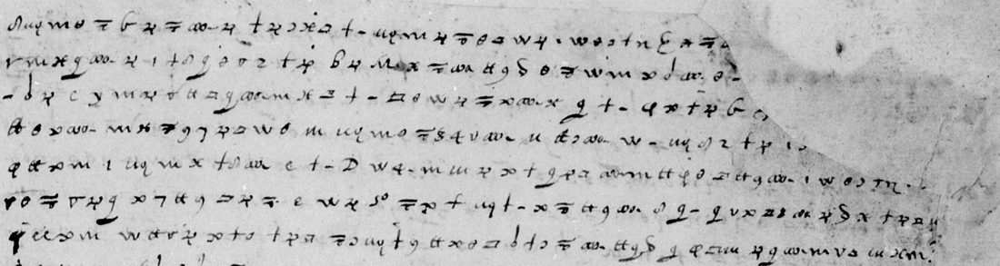
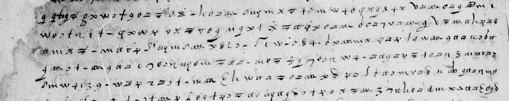
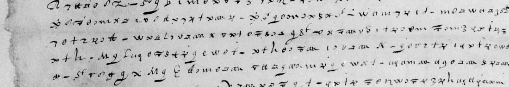

01 The document and where the 1556 date came from
BnF fr. 20974 is titled Clefs de la correspondance chiffrée de François, duc de Guise, avec quelques lettres de lui (1556) (Gallica btv1b9062131g). Tomokiyo’s catalogue of the volume numbers the letter no. 1 (pp. 1–4) and lists no contemporary decipherment for it. Pages 1–3 are forty, forty and thirteen lines of signs with no clear text at all. Page 3 is bound upside down and its lower half is blank. Page 4 is the letter’s blank verso. The lower half has a key sheet pasted onto it, dated 1556 and headed for the general d’Albany (Tomokiyo’s no. 2): an alphabet, nulls, and code signs for the Pope, the Emperor, Ferrara, Venice and Parma. That key is the source of the catalogue’s year. Its signs are not the letter’s.

02 The cipher and the key
Tomokiyo reconstructed the Nevers–Piles alphabet from Jean de Piles’s letters of 1586 to the Duke of Nevers in BnF fr. 3612, which is not digitised. His table gives one or more signs for each letter from a to z, three nulls, and a few codes: de, et, que, qui, quil, luy, les, des, Mr. Decrypted with the table, this letter at first gave mostly nonsense. The cause was the transcription: closed and open boxes, plain and hooked v, the cross × and the lying loop ∞ are easy to confuse, and each pair has different values. After two transcription passes and six rounds of checking against the images, the key used here has one value per glyph, as in Tomokiyo’s table. It adds code signs attested by their contexts:
| Sign | Value | Evidence |
|---|---|---|
| ʒ followed by Ձ | cardinal | “cardinal de lorraine”, “cardinal de peleue”, “cardinal alanus” |
| ʒ alone | le, du, d | “lung le grand”, “le doien”, “le duc de parme”, “du dix neufiesme” |
| ce ligature | pour (and o) | “pour empescher”, “pour cela”, “pour la presenter” |
| b b | leur | “leur sainte intention”, “leurs peines”, “leur uolonte” |
| ꝺ with raised o | faire | “la faire tenir a Rome”, “a uous faire seruice” (also in fr. 4715) |
| large hooked b | ie | “ie luy nommai”, “ie uous suplie” (6 of 6 in fr. 4715) |
| dotted × | vous (or null) | “uous asseurer”, “depuis uous scaues” (always vous in fr. 4715) |
| dotted cursive M | lettre | “le contenu de la lettre”, “la lettre signe”, “une semblable lettre pour fortifier” |
| boxed cross ⊞ | parle | twice in fr. 4715 under “parle”; here once plausibly (“ouy parler”), once not |
The sibling is BnF fr. 4715 f. 2: the Cardinal de Guise to Nevers, Soissons, 6 October 1586, in the same cipher, with its decipherment written above every line. All 29 of its lines were aligned here, about 1,050 sign–value pairs. It confirms Tomokiyo’s values, and in that hand the sigma-like ꝺ is mostly t, not a. The letter at fr. 3413 no. 62, from Cardinal Pellevé’s household in Rome to Jean de Piles in August 1589, uses the same alphabet.
03 The decrypted text
The text is given as the signs spell it, in the writer’s spelling (u for v, i for j, no accents). ? marks a word whose signs are present but unresolved, […] paper that is lost, and * a word accepted with a sign against the key (grade C). A vertical bar marks the line ends of the manuscript. There are no word divisions in the cipher; the spaces are editorial.
Page 1: the chapter’s letter to the Pope
apres a este leu en la presence de ceulx qui est[oient …] | arreste de l’assemblee a lettre estoit escript de a[…] | […]ape pour luy remonstrer la necessite que la uile a pour […] | feit residence et preschat et fut capable de u[…] | uoir de prelat, pour la descharge il s’en trouueroit de ceulx de | mesmes idoines de ce, s’il plaisoit a sa Sainctete l’en pour|uoir comme ilz l’en suplioient, plustost que ung estranger. | Uous scauraie pas representer le contenu de la lettre au urai, mais | peu de desus que uous en pouez imaginer le subiect … | qu’il i eut personne de nomme la lettre signe. Il proposa deux choses, | une le moien de la faire tenir a Rome ? et fut prie le capitaine Tr|on de l’enuoier a son frere pour la presenter, de quoi ils s’excusent, | disant que cela ? trop de soupcon a leur maison et a son nom, | et mesme que pour les choses passees … qu’il failloit moien | d’obtenir du chapitre une semblable lettre pour fortifier …
The rest of page 1 loses its right edge from line 16 to line 31. What survives tells how the writer took the matter to Madame de Sainct Pierre (the abbess of Saint-Pierre-les-Dames at Reims, Renée de Lorraine), and asked that it be kept aussi secret. It goes on: “les anglois uenus de Rome et qui estoient lors … disent que la matiere a este seulement p[re]conise[e], mais ils se trompent … qui n’est poinct subiet a preconisation”. The page closes: “il semble au langage de ? Bardin que son maistre n’ait pas … du contentement qu’il esperoit … il ne fault pas faire demonstration … tost response, et ne se ueult ioindre”. Bardin is the Duke of Lorraine’s agent in Paris, the one quoted in the orbais letter.
Page 2: the postulation
… pendant que i’estoie enc|ores a Rome il praticqua ici au chapitre une election ou po|stulation de deux personages et deux chanoines, l’ung le grand | archidiacre Brulart qui i consentit en plourant et a son gre, | come il m’a dit; l’aultre esleu son postule est le doien Frison qui est | maintenant a Rome … du cardinal de Lorraine ? fut porteurs de l’acte de | postulation a Rome … si tost il i est arriue il | ne m’en ? mot … lors cardinal de Peleue, le commandeur de Diou pour | qui s’il a entendu de cela ou s’il en a charge de uous ou de Mr de Maine; et il | a ? que cela a este a leurs intentions. Il fut fort aise | d’empescher l’execution … en feit le sr Frison … | … remise de Mr cardinal Alanus qui est du ? deuotion a la pro[…]
… pour ce coup la le commandeur n’en a de la point pour estre … Frison depuis, uous scaues ce qui s’est passe … comme enfin cardinal de Pel[leue] … este propose a la congregation ? et uous l’aues eu | [ag]reable a condition qu’il se contenteroit du reuenu de l’arche|[ue]sche ancien ? toucher a l’abaie de saint Remi qui demeureroit | [en]tiere a uostre uille. Les choses sont* demoures ainsi iusques a pres|ent; Mr ne pensoit pas qu’il songeast plus aux premieres prati|ques, bien que ie puis, puis que ie suis ici … mais ie ne uoioie pas beaucoup d’aparence de remetre cela | en auant, et pour ce pensois ie que ceulx qui m’en aloient ? pensent tous | ? a enuie ou ialousies pour croire que la chose peust reusc|ir. Il i a quatre ou cinq de [la] Lique s’estant ? assemble de uille pour | aduiser des commodite* et secours … ceulx de Prouins | … ne s’estoient peu trop ? du grand archidiacre | ni du uidame Robilard qui est mon hoste …

Page 3: the armies, the date, and a postscript
? a l’armee … qu’il tient estre seure et asseure… | … de dix huict mil lansquenetz et huict mil reistres et de | […]es, dont une qui se doit aler au pais bas pour empescher le duc de Parme, | et du reste ici il est seur de metre luy mesmes a leuer ? pais a|pres qu’il aura retires ce qu’il aura peu … qu’il est | infiniment mal content des longueurs de Mr de Maine et du peu d’ordre | qu’il donera a faire … De Reims du dix neufiesme de iuin. Et ie uous suplie | uous asseurer de ma fidelite a uous faire seruice.
Il accorde de la rancon du duc | d’Elbeuf a cinquante mil escus, que ? ? de leuer sur les uiles. | Il i a Mrs depesches* pour cela; il i eust deuant qu’il assemble de uille pour ce|la. Il m’a dict que les Mrs qui ourent monstre que pour cela portoient cent | cinquante mil escus. I’entens que la uille s’excuse de y pouoir | contribuer.

04 Date, writer and addressee
Date. The letter gives only “de Reims du dix neufiesme de iuin”. The year follows from its content. The see of Reims fell vacant with the murder of Cardinal Louis de Guise at Blois on 24 December 1588, and the duc d’Elbeuf, whose ransom is being agreed, was taken at Blois on the same day and held at Loches from March 1589. The dean Frison is “maintenant a Rome” with the act of postulation. In the orbais letter, written in Rome on 23 August 1589 by Cardinal Pellevé’s secretary to Jean de Piles, Rome “depeschera … dedans deux jours le doien”. So the letter is of 19 June 1589. Pellevé himself was named to Reims only on 10 May 1591.
Writer. The writer had been in Rome shortly before (“pendant que i’estoie encores a Rome”). He writes from Reims, lodges with the vidame Robilard, and uses the cipher of Jean de Piles, abbé d’Orbais, who was the League’s envoy in Rome earlier in 1589 and whose abbey lies near Reims. Piles is the likely writer, but the letter is not signed.
Addressee. The addressee is not named. He had approved the postulation (“uous l’aues eu agreable a condition qu’il se contenteroit du reuenu de l’archeuesche”) and is distinct from Mayenne and from the Cardinal de Pellevé, both named in the third person. He is probably in Rome.
05 How it was decrypted
The three pages were fetched from DECODE and transcribed sign by sign into ASCII labels, 93 lines. Page 1 was done by hand at twice the scan size. Pages 2 and 3 were done by two agents at 1.5–3×, and page 3 was transcribed turned upright.
A free homophonic annealing under a French 5-gram model failed: the text collapsed into e and s. A decoder that allowed each sign a small set of values, then a word-level decoder with a 30,000-word lexicon of sixteenth-century letters that re-estimated those sets, brought out the content: chapitre, chanoines, archidiacre Brulart, postulation, lansquenetz, Parme, Elbeuf.
The decryption itself was done line by line against the images in six rounds. Each word was checked against the signs by an aligner, which measures the fraction of signs that agree with the key (measure.py).
Two figures are reported. Sense counts every sign inside a real word or a declared null: 3,598 of 3,920, 91.8%. Strict counts only signs that agree with the key: 3,484, 88.9%. The difference is the writer’s slips and doubtful glyphs, accepted from context.
06 What remains uncertain
- Lost paper (illegible): the right edge of page 1 from line 1 to 4 and 16 to 31, and the left margin of page 2 on lines 1–2, 15–28 and 39–40 (about a fifth of the line). These signs are not counted in the 3,920. An ink blot on page 3, line 2, hides one word, perhaps armees.
- Single signs (too short): about 25 isolated signs in running text that the sentence does not need, for example page 1 line 18 (ʒ), line 35, line 38, and page 3 line 4 (the barred Z).
- Codes: the boxed cross ⊞ before Bardin (p. 1 l. 36), probably a title. A barred Z and an 8 with a raised t on page 3 have no attested value.
- Open words: about 80 words of two or more signs, with no candidate that fits both the signs and the sentence. The worst passages are page 1 lines 16 and 22–26 (Madame de Sainct Pierre’s reply, next to the tear), page 2 lines 2–3, 13–16 and 39, and page 3 lines 1, 5 and 9.
- Doubtful readings (grade C): capitaine Tron (p. 1 l. 11–12, a name decrypted from the key alone); en uerite (p. 2 l. 2); sont (l. 28); commodite (l. 35); depesches (p. 3 l. 10); de Lique (p. 2 l. 34); the year 1589, inferred as above.
The transcription, the key files, the decrypted text and the alignment tools are in the repository folder. So is the aligned sibling fr4715_aligned.txt, which also serves the orbais letter.
07 Sources
- Bibliothèque nationale de France, fr. 20974 pp. 1–4: Gallica btv1b9062131g, views 1–4; DECODE record R2276 (images 1–3).
- Bibliothèque nationale de France, fr. 4715 f. 2: Gallica btv1b52509819x, view 17.
- S. Tomokiyo, Duke of Guise’s Ciphers (1556) in BnF fr.20974 and Catalogue of Ciphers in BnF fr.3995 (the Nevers–Piles table), Cryptiana. Norbert Biermann’s identification (2021) is reported there as a private communication.
- The sibling letter in this repository: a letter from Rome to the abbé d’Orbais, 23 August 1589.
Transcription, keys, decrypted text and tools: r2276/ in the repository.